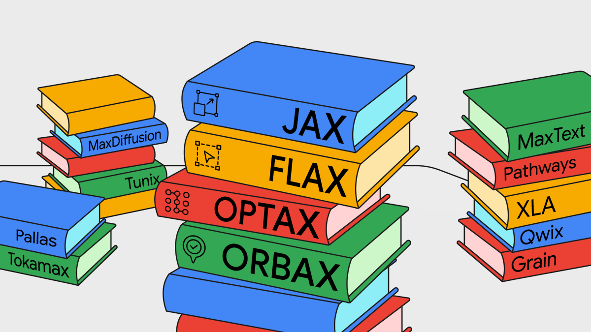

The JAX AI stack
Marie-Hélène Burle
What is JAX?
Library for Python developed by Google
Key data structure: Array
Composition, transformation, and differentiation of numerical programs
Compilation for CPUs, GPUs, and TPUs
NumPy-like and lower-level APIs
Requires strict functional programming
Why JAX?
Fast
Default data type suited for deep learning
Like PyTorch, uses float32 as default. This level of precision is suitable for deep learning and increases efficiency (by contrast, NumPy defaults to float64)
The same code can run on CPUs or on accelerators (GPUs and TPUs)
XLA (Accelerated Linear Algebra) optimization
Asynchronous dispatch
Vectorization, data parallelism, and sharding
All levels of shared and distributed memory parallelism are supported
Great AD
Summarized from a blog post by Chris Rackauckas
Close to the math
Considering the function f:
We can create a new function dfdx that computes the gradient of f w.r.t. x:
dfdx returns the derivatives:
4.0Forward and reverse modes
- reverse-mode vector-Jacobian products:
jax.vjp - forward-mode Jacobian-vector products:
jax.jvp
Higher-order differentiation
With a single variable, the grad function calls can be nested:
With several variables, you have to use the functions:
jax.jacfwdfor forward-mode,jax.jacrevfor reverse-mode.
How does it work?
How does it work?
How does it work?
JAX itself is not a deep learning library
But a Python sublanguage ideal for deep learning
The JAX AI stack 

Modular approach